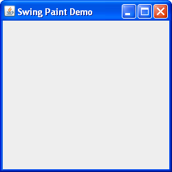

Lección: Realización de Pintado Personalizado
Creando la Aplicación Demo (Paso 1)
Todos los Interfaces de Gráficos de Usuario requieren alguna clase de marco en la aplicación principal en la
cual visualizarse. En Swing, este es una instancia de javax.swing.JFrame. Por lo tanto, nuestro
primer paso es instanciar esta clase y asegurarnos de que todo funciona como se espera. Note que cuando
programamos en Swing, el código de creación de su IGU debería colocarse en el Hilo de Envío de Eventos (EDT en
inglés, HEE en español). Esto evitará posibles condiciones de carrera que podrían conducir a un punto muerto o
bloqueo. La lista de códigos siguiente muestra cómo se hace esto.

Una Instancia de javax.swing.JFrame
Pulse el botón Lanzar para ejecutar SwingPaintDemo1 usando Java™ Web Start ( descargue KDJ 7 o posterior). Alternativamente, para compilar y ejecutar el ejemplo por sí mismo, consulte el índice de ejemplos.
package painting;
import javax.swing.SwingUtilities;
import javax.swing.JFrame;
public class SwingPaintDemo1 {
public static void main(String[] args) {
SwingUtilities.invokeLater(new Runnable() {
public void run() {
createAndShowGUI();
}
});
}
private static void createAndShowGUI() {
System.out.println("Created GUI on EDT? "+
SwingUtilities.isEventDispatchThread());
JFrame f = new JFrame("Swing Paint Demo");
f.setDefaultCloseOperation(JFrame.EXIT_ON_CLOSE);
f.setSize(250,250);
f.setVisible(true);
}
}
Esto crea el marco, establece su título, y hace todo visible. Hemos usado la clase de ayuda
SwingUtilities para construir este IGU en el Hilo de Envío de Eventos. Note que por defecto,
un JFrame no hace salir la aplicación cuando el usuario pulsa su botón "Cerrar".
Nosotros soportamos este comportamiento invocando el método setDefaultCloseOperation, pasando el
argumento apropiado. También, establecemos explícitamente el tamaño del marco en 250 x 250 pixels. Este paso
no será necesario una vez empecemos a agregar componentes al marco.
Ejercicios:
- Compile y ejecute la aplicación.
- Compruebe los botones de maximizar y minimizar.
- Pulse el botón cerrar (la aplicación deberá terminar).